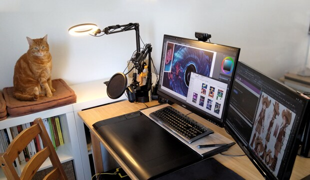

Fullscreen mode
Just press »F« on your keyboard to show your presentation in fullscreen mode. Press the »ESC« key to exit fullscreen mode.
Overview mode
Press "Esc" or "o" keys to toggle the overview mode on and off. While you're in this mode, you can still navigate between slides, as if you were at 1,000 feet above your presentation.
Unix/Linux
Lesson 4
Plan
- OpenSource software and licences
- Open
- Free,
- Unix application area (сфера применения)
- Power of OpenSource Linux -> Ubuntu OpenGL SergLem Knowledge !!! Godot https://ru.wikipedia.org/wiki/Open_Cascade_Technology
Public domain - Общественное достояние (The Best One)


Public domain - Общественное достояние
What can be in the public domain?Copyleft (be careful with it)
Copyleft
Используя «copyleft»-лицензии, авторы и правообладатели предоставляют права на распространение копий оригинального произведения и его изменённых версий.
Авторы производного произведения обязаны распространять его с сохранением тех же самых прав. Другими словами, использование «copyleft»-лицензии позволяет создавать свободное произведение.
Произведением может быть, например, компьютерная программа. В этом случае все изменённые и расширенные версии программы обязаны быть свободными.
Creative Commons (Good one)
 https://creativecommons.org/
https://creativecommons.org/
Images
CreativeCommons
https://creativecommons.org/Flickr:
https://www.flickr.com/search/?license=4%2C5%2C6%2C9%2C10&text=wood%20textureIcons
IconArchive:
https://iconarchive.com/show/role-playing-icons-by-chanut/Spell-Scroll-icon.html https://iconarchive.com/show/tuxlets-icons-by-mathijssen/Tux-icon.htmlAges
Richard Stallman and GNU as CopyLeft (be careful with it)

Emacs
Text Editor
Emacs
Ричард Столлман занимался разработкой текстового редактора Emacs на основе исходных текстов Джеймса Гослинга (автор языка Java).Emacs
Тогда Гослинг свободно раздавал свои исходные тексты всем заинтересованным.
Emacs
Однако в какой-то момент Гослинг продал права на распространение Emacs компании UniPress, и эта компания попросила Столлмана прекратить распространение его версии Emacs, так как права принадлежат им.Emacs
Этот инцидент заставил Столлмана переписать заново те части исходного текста Emacs, которые теперь принадлежали UniPress, после чего он разработал собственную лицензию на своё программное обеспечение.
Логотип GNU GPLv3
Free, MIT, GNU
(freeware) vs (free software)
freeware - обычно распространяется в исполнимом виде без исходных кодов и является проприетарным ПО,
free software - получателям должны быть доступны его исходные коды, из которых можно создавать исполняемые файлы, вместе с соответствующими лицензиями.
Open-source software &
Open-source hardware
Open-source software (OSS) is a type of computer software in which source code is released under a license in which the copyright holder grants users the rights to use, study, change, and distribute the software to anyone and for any purpose.[1] Open-source software may be developed in a collaborative public manner. Open-source software is a prominent example of open collaboration.
Open-source hardware (OSH) consists of physical artifacts of technology designed and offered by the open-design movement.
Open-source software

Open-source hardware

Arduino
STM32
STM32 is a family of 32-bit microcontroller integrated circuits by STMicroelectronics.All about Open Source
What Can be Open Source?
Comic: Pepper & Carrot
Author: David Revoypeppercarrot.com
Comic: Pepper & Carrot - Wallpapers
 https://www.peppercarrot.com/ru/wallpapers
https://www.peppercarrot.com/ru/wallpapers
Free Brushes, Tutorials, Fonts, Soft, Avatars ...
Thanks David Revoy ^-^ https://www.peppercarrot.com/ru/goodies
https://www.peppercarrot.com/ru/goodies
Author: David Revoy
David Revoy a French artist born in 1981.
David Revoy
"After more than 10 years of freelance in digital painting, teaching, concept-art, illustrating and art-direction, I decided to start my own project. I finally found a way to mix all my passions together, the result is Pepper&Carrot."
qBittorrent
The qBittorrent project aims to provide a Free Software alternative to Small µTorrent iconµTorrent. Additionally, qBittorrent runs and provides the same features on all major platforms (Linux, Mac OS X, Windows, OS/2, FreeBSD). qBittorrent is based on the Qt toolkit and libtorrent-rasterbar library. www.qBitTorrent.orgEmulators?
Cemu Emulator - Wii U Emulator.

Cemu Emulator

Programming Libraries?
OpenGL/WebGL
ThreeJs

What for ThreeJs, WebGL in Browser
https://bruno-simon.com/#cybertruckOpenCV

OpenCV - Open Computer Vision
OpenCV
.jpg)
OpenCV - Tesla
 OS:
https://glazeos.github.io/
OS:
https://glazeos.github.io/